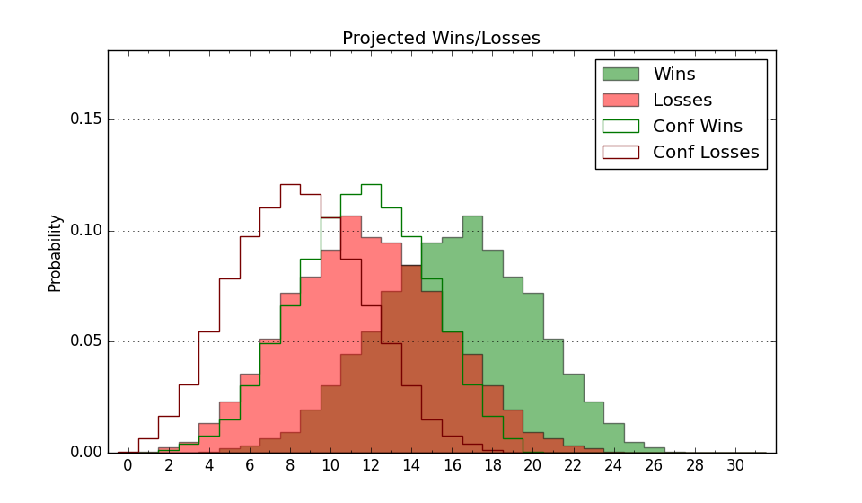

| Home | Game Probabilities | Conferences | Preseason Predictions | Odds Charts | NCAA Tournament |
| City: | Jersey City, New Jersey | |
| Conference: | Metro Atlantic (1st)
| |
| Record: | 0-0 (Conf) 1-0 (Overall) | |
| Ratings: | Comp.: -0.8 (168th) Net: 10.6 (65th) Off: 102.6 (90th) Def: 92.0 (65th) SoR: 13.3 (95th) |
| Remaining | ||||||
|---|---|---|---|---|---|---|
| Date | Opponent | Win Prob | Pred. | |||
| 11/12 | @ Seton Hall (37) | 8.8% | L 56-72 | |||
| 11/15 | Bucknell (325) | 86.3% | W 76-63 | |||
| 11/19 | @ St. Francis NY (336) | 69.0% | W 69-63 | |||
| 11/27 | Fairleigh Dickinson (348) | 90.5% | W 76-60 | |||
| 12/1 | Mount St. Mary's (233) | 75.2% | W 65-58 | |||
| 12/3 | @ Fairfield (203) | 42.9% | L 62-63 | |||
| 12/10 | @ Saint Joseph's (180) | 38.7% | L 64-67 | |||
| 12/13 | @ Hartford (327) | 65.1% | W 71-67 | |||
| 12/18 | Quinnipiac (221) | 74.0% | W 72-65 | |||
| 12/22 | @ Maryland (35) | 8.6% | L 58-74 | |||
| 12/30 | Manhattan (262) | 80.0% | W 72-63 | |||
| 1/1 | @ Iona (113) | 24.0% | L 63-71 | |||
| 1/6 | @ Siena (217) | 44.7% | L 63-64 | |||
| 1/8 | Canisius (243) | 76.5% | W 70-62 | |||
| 1/13 | @ Quinnipiac (221) | 45.5% | L 68-69 | |||
| 1/15 | Fairfield (203) | 71.9% | W 66-59 | |||
| 1/20 | @ Marist (260) | 53.5% | W 65-64 | |||
| 1/22 | Niagara (239) | 76.1% | W 65-58 | |||
| 1/28 | @ Mount St. Mary's (233) | 47.2% | L 61-62 | |||
| 2/3 | @ Rider (207) | 43.4% | L 63-65 | |||
| 2/10 | Marist (260) | 79.7% | W 69-60 | |||
| 2/12 | @ Manhattan (262) | 54.0% | W 68-67 | |||
| 2/19 | Iona (113) | 51.8% | W 67-66 | |||
| 2/24 | @ Canisius (243) | 48.8% | L 65-66 | |||
| 2/26 | @ Niagara (239) | 48.4% | L 61-62 | |||
| 3/2 | Rider (207) | 72.3% | W 67-61 | |||
| 3/4 | Siena (217) | 73.4% | W 67-60 | |||
| Previous | Game Score | |||||
| Date | Opponent | Win Prob | Result | Off | Def | Net |
| 11/7 | NJIT (308) | 84.2% | W 73-59 | 6.3 | 2.3 | 8.6 |
| Stats & Trends | |||||
|---|---|---|---|---|---|
| Current | Day | Week | Month | Season | |
| Composite | -0.8 | -0.0 | +0.3 | +0.3 | +0.3 |
| Comp Rank | 168 | -- | +1 | +1 | +1 |
| Net Efficiency | 10.6 | -0.1 | -- | -- | -- |
| Net Rank | 65 | -2 | -- | -- | -- |
| Off Efficiency | 102.6 | +0.1 | -- | -- | -- |
| Off Rank | 90 | -9 | -- | -- | -- |
| Def Efficiency | 92.0 | -0.2 | -- | -- | -- |
| Def Rank | 65 | -2 | -- | -- | -- |
| SoS Rank | 234 | -14 | -- | -- | -- |
| Exp. Wins | 16.2 | -0.1 | +0.3 | +0.3 | +0.3 |
| Exp. Conf Wins | 11.6 | -0.1 | +0.1 | +0.1 | +0.1 |
| Conf Champ Prob | 18.0 | -0.0 | +0.2 | +0.2 | +0.2 |

| Advanced Stats | ||
|---|---|---|
| Stat | Value | Rank |
| Off Eff FG % | 0.488 | 129 |
| Off Ast Ratio | 0.139 | 107 |
| Off ORB% | 0.281 | 96 |
| Off TO Rate | 0.137 | 141 |
| Off FT Ratio | 0.316 | 134 |
| Def Eff FG % | 0.432 | 42 |
| Def Ast Ratio | 0.110 | 41 |
| Def ORB% | 0.255 | 122 |
| Def TO Rate | 0.158 | 246 |
| Def FT Ratio | 0.399 | 238 |